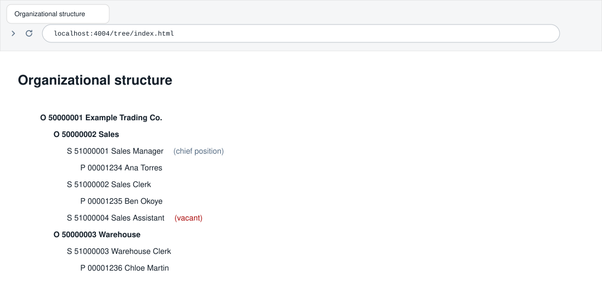
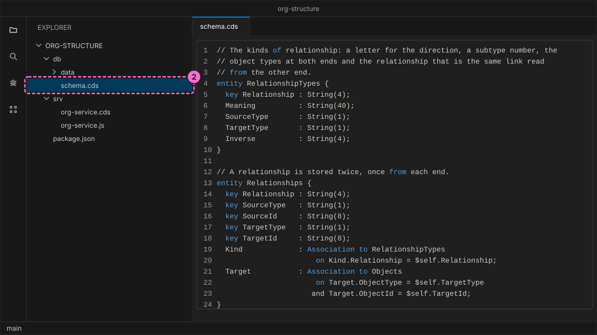
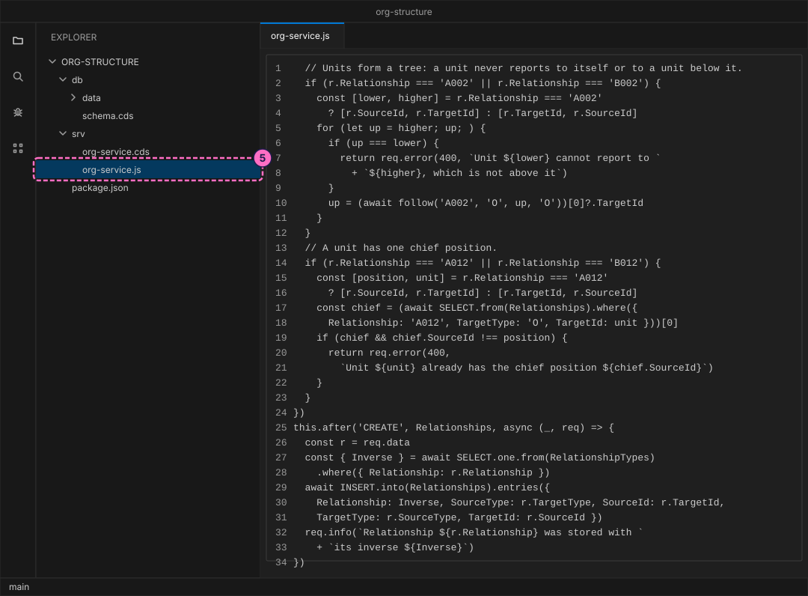
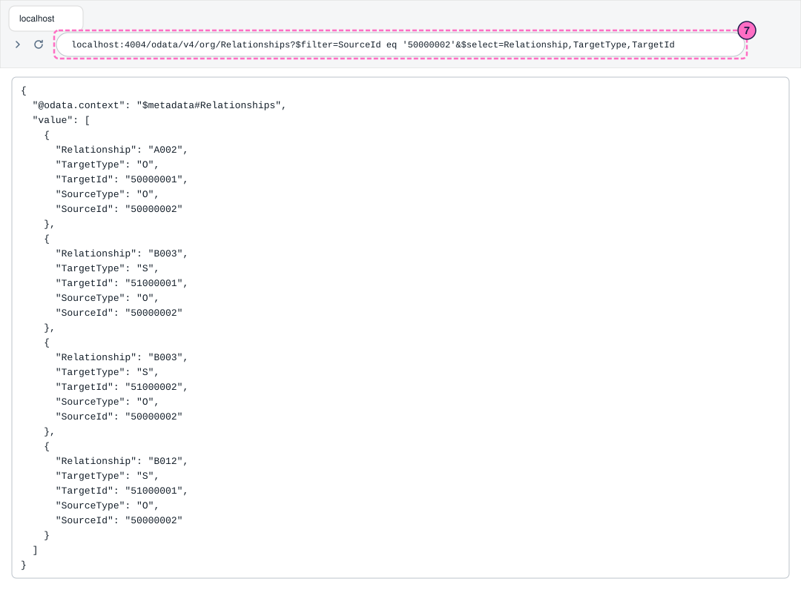
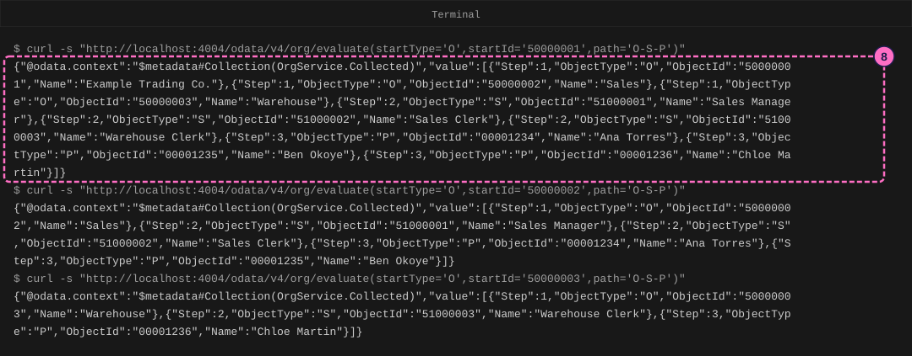
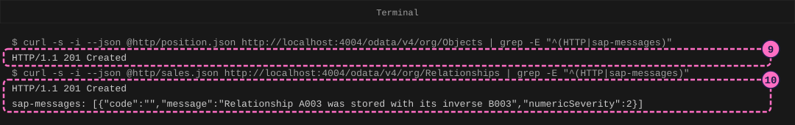
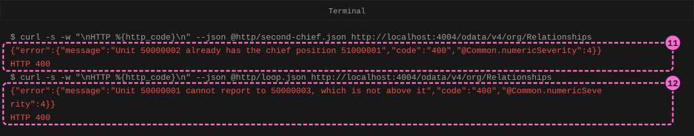
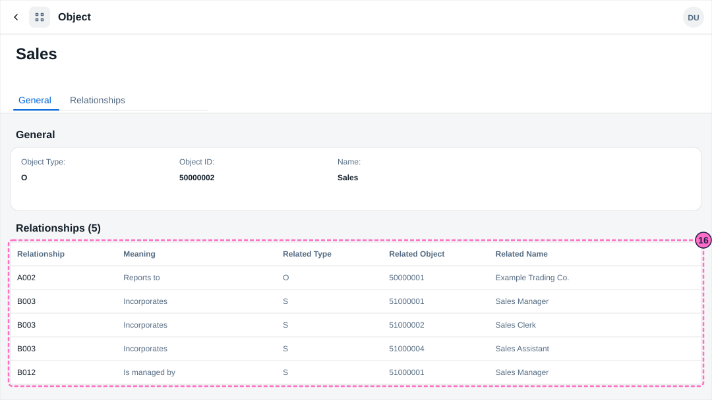

SAP HR Guide: Build an Organizational Structure Model
|
This content was generated with the assistance of AI and should be verified against the official documentation before being relied on in production. |
Checked on 2026-11-13 against CAP Node.js 10.2 (@sap/cds 10.2.2, @sap/cds-dk 10.2.1), the Fiori elements preview of cds watch (SAPUI5 1.145.0), curl 8.7 and Node.js 24.21.
What you build
This is a teaching model built with CAP. It is not SAP S/4HANA or SAP SuccessFactors and does not reproduce their screens.
You build a small model of the structure that SAP Organizational Management stores: objects of four types (O organizational unit, S position, C job and P person) that are linked by relationships. Every relationship is stored twice, once from each end, as SAP does: A003 "belongs to" from a position to its unit and B003 "incorporates" from the unit to the position. The model checks each new relationship against its definition, refuses a second chief position for a unit and refuses a loop in the tree of units. You then ask the structure a question with an evaluation path, the path O-S-P that collects the units below a start unit, their positions and the persons who hold them, and you read the structure as a tree on a web page and as a Fiori elements object page. The model leaves out what a real system adds: validity periods for objects and relationships (the guide Model Employee Records with Validity Periods shows that idea), tasks, the changing and deleting of objects, and every infotype of an object except its name.

Before you start
-
No account is needed: the CAP tools and curl install without signing in. Installing
@sap/cds-dkmeans accepting the SAP Developer License Agreement, version 3.2, which the lab README names. -
Do the guides Your First CAP Service and Add a Fiori Elements App to a CAP Service first (they explain
cds init, CDS files, CSV data,cds watchand the Fiori preview). The guide Model Employee Records with Validity Periods is the model for the style of this one. -
Read Organizational Management for the ideas that the model copies, and Enterprise and Personnel Structure for the other picture of a company that OM is not.
-
You need curl 7.82 or newer, which has the option
--json.curl --versionprints the version. -
The example is the one of the HR pages: Example Trading Co. with the units
50000001Example Trading Co.,50000002Sales and50000003Warehouse, the jobs52000001Manager and52000002Clerk, the positions51000001Sales Manager,51000002Sales Clerk and51000003Warehouse Clerk, and the persons Ana Torres00001234, Ben Okoye00001235and Chloe Martin00001236, who hold those three positions in that order. The Sales Manager is the chief position of Sales. All numbers and names are invented example values, not values delivered by SAP. -
Which names come from an SAP page and which are the model’s own: the object types
O,S,CandP, the relationship numbers 002, 003, 007, 008 and 012, the names Reports to, Is line supervisor of, Belongs to, Incorporates, Holder and Manages, the direction lettersB002,A003,B003,A008andA012, and the three rows of the pathO-S-Pcome from the SAP Help pages Organizational Unit, Position, Subtypes of Relationships Infotype (1001) and Structural Profiles, which are listed under Sources. The direction lettersA002,A007andB007and the names Has job, Is job of, Holds and Is managed by for the other end of 007, 008 and 012 are the model’s own. So are the two rules (one chief position per unit and no loop of units), the extra position51000004Sales Assistant, the pathO-S-Cof the variation and the tree page. The Sales Assistant extends the example: it is a position without a holder. -
The figures are drawings of the editor, the terminal, the browser and the Fiori page, not screenshots. A highlighted box with a number marks the file, the line or the page part of the step with the same number.
Steps
Create the project and model the structure
-
Create a CAP project named
org-structureand install it, as in the first guide:cds init org-structure --nodejs cd org-structure npm install -
Create
db/schema.cds.Objectsholds every object, told apart by its type and its ID.RelationshipTypesis the list of kinds of relationship: the direction letter and the number, a meaning, the object types at the two ends and the relationship that is the same link read from the other end.Relationshipsholds the links: one record per relationship and direction, as the infotype Relationships (1001) of SAP does.EvaluationPathsandEvaluationStepshold the rows of an evaluation path.namespace sap.guide.org; // A teaching model of the organizational structure of SAP HR, not SAP S/4HANA // and not SAP SuccessFactors. Names, numbers and codes are invented example // values. The model leaves out validity periods and the deletion of objects. // An object has a type (O unit, S position, C job, P person) and an ID. entity Objects { key ObjectType : String(1); key ObjectId : String(8); Name : String(40); Relationships : Association to many Relationships on Relationships.SourceType = $self.ObjectType and Relationships.SourceId = $self.ObjectId; } // The kinds of relationship: a letter for the direction, a subtype number, the // object types at both ends and the relationship that is the same link read // from the other end. entity RelationshipTypes { key Relationship : String(4); Meaning : String(40); SourceType : String(1); TargetType : String(1); Inverse : String(4); } // A relationship is stored twice, once from each end. entity Relationships { key Relationship : String(4); key SourceType : String(1); key SourceId : String(8); key TargetType : String(1); key TargetId : String(8); Kind : Association to RelationshipTypes on Kind.Relationship = $self.Relationship; Target : Association to Objects on Target.ObjectType = $self.TargetType and Target.ObjectId = $self.TargetId; } // An evaluation path is a short table: from objects of one type, follow one // relationship to objects of another type, row by row. entity EvaluationPaths { key Path : String(10); Description : String(60); Steps : Composition of many EvaluationSteps on Steps.Path = $self; } entity EvaluationSteps { key Path : Association to EvaluationPaths; key Row : Integer; FromType : String(1); Relationship : String(4); ToType : String(1); }
-
Create the five CSV files in
db/data. They hold the 11 objects of the example, the ten kinds of relationship (five numbers, each with its two directions), the relationships of the example and the pathO-S-P. Each relationship of the example is written twice, once from each end, which makes 24 records for the 12 links of the reference page. The three rows of the path are the ones that SAP lists: fromOalongB002toO, fromOalongB003toSand fromSalongA008toP.ObjectType,ObjectId,Name O,50000001,Example Trading Co. O,50000002,Sales O,50000003,Warehouse C,52000001,Manager C,52000002,Clerk S,51000001,Sales Manager S,51000002,Sales Clerk S,51000003,Warehouse Clerk P,00001234,Ana Torres P,00001235,Ben Okoye P,00001236,Chloe MartinRelationship,Meaning,SourceType,TargetType,Inverse A002,Reports to,O,O,B002 B002,Is line supervisor of,O,O,A002 A003,Belongs to,S,O,B003 B003,Incorporates,O,S,A003 A007,Has job,S,C,B007 B007,Is job of,C,S,A007 A008,Holder,S,P,B008 B008,Holds,P,S,A008 A012,Manages,S,O,B012 B012,Is managed by,O,S,A012Relationship,SourceType,SourceId,TargetType,TargetId A002,O,50000002,O,50000001 B002,O,50000001,O,50000002 A002,O,50000003,O,50000001 B002,O,50000001,O,50000003 A003,S,51000001,O,50000002 B003,O,50000002,S,51000001 A003,S,51000002,O,50000002 B003,O,50000002,S,51000002 A003,S,51000003,O,50000003 B003,O,50000003,S,51000003 A007,S,51000001,C,52000001 B007,C,52000001,S,51000001 A007,S,51000002,C,52000002 B007,C,52000002,S,51000002 A007,S,51000003,C,52000002 B007,C,52000002,S,51000003 A008,S,51000001,P,00001234 B008,P,00001234,S,51000001 A008,S,51000002,P,00001235 B008,P,00001235,S,51000002 A008,S,51000003,P,00001236 B008,P,00001236,S,51000003 A012,S,51000001,O,50000002 B012,O,50000002,S,51000001Path,Description O-S-P,Staffing assignments along the organizational structurePath_Path,Row,FromType,Relationship,ToType O-S-P,1,O,B002,O O-S-P,2,O,B003,S O-S-P,3,S,A008,P
Write the rules and the queries
-
Create
srv/org-service.cds. It exposes the five entities as an OData service and declares two functions:evaluatecollects the objects of an evaluation path from a start object, andtreereturns the tree of a unit.using { sap.guide.org as db } from '../db/schema'; service OrgService { entity Objects as projection on db.Objects; entity RelationshipTypes as projection on db.RelationshipTypes; entity Relationships as projection on db.Relationships; entity EvaluationPaths as projection on db.EvaluationPaths; entity EvaluationSteps as projection on db.EvaluationSteps; type Collected { Step : Integer; ObjectType : String(1); ObjectId : String(8); Name : String(40); } type TreeNode { Level : Integer; ObjectType : String(1); ObjectId : String(8); Name : String(40); Chief : Boolean; } function evaluate(startType : String(1), startId : String(8), path : String(10)) returns array of Collected; function tree(startId : String(8)) returns array of TreeNode; } -
Create
srv/org-service.js. The first part checks a new relationship before it is stored: the relationship must be defined, the object types must be the ones of its definition, both objects must exist, the same record must not exist already, a unit must not report to itself or to a unit below it, and a unit gets one chief position. After the record is stored, the second handler writes the same link from the other end, with the relationship that the definition names as its inverse. The second part holds the two functions.evaluateapplies row 1 of the path to the start object and every next row to what the row before found; a row from a type to the same type, such asO B002 O, is followed until nothing new turns up.treewalks the units from the start unit, lists the positions of each unit with their holders and then the units below.import cds from '@sap/cds' const key = (type, id) => `${type} ${id}` export default class OrgService extends cds.ApplicationService { init() { const { Objects, RelationshipTypes, Relationships, EvaluationSteps } = this.entities // The relationship records that leave one object, of one kind, to one type. const follow = (relationship, fromType, fromId, toType) => SELECT.from(Relationships).where({ Relationship: relationship, SourceType: fromType, SourceId: fromId, TargetType: toType }) const nameOf = async (type, id) => (await SELECT.one.from(Objects) .where({ ObjectType: type, ObjectId: id }))?.Name // A relationship is checked against its definition. Then it is stored // from both ends: the other end is written after the record itself. this.before('CREATE', Relationships, async (req) => { const r = req.data const from = key(r.SourceType, r.SourceId) const to = key(r.TargetType, r.TargetId) const type = await SELECT.one.from(RelationshipTypes) .where({ Relationship: r.Relationship }) if (!type) { return req.error(400, `Relationship ${r.Relationship} is not defined`) } if (r.SourceType !== type.SourceType || r.TargetType !== type.TargetType) { return req.error(400, `Relationship ${r.Relationship} links ` + `${type.SourceType} to ${type.TargetType}, ` + `not ${r.SourceType} to ${r.TargetType}`) } const ends = [[r.SourceType, r.SourceId], [r.TargetType, r.TargetId]] for (const [t, id] of ends) { if (!(await nameOf(t, id))) { return req.error(400, `Object ${key(t, id)} does not exist`) } } const same = await SELECT.one.from(Relationships).where({ Relationship: r.Relationship, SourceType: r.SourceType, SourceId: r.SourceId, TargetType: r.TargetType, TargetId: r.TargetId }) if (same) { return req.error(400, `Relationship ${r.Relationship} from ${from} to ${to} already exists`) } // Units form a tree: a unit never reports to itself or to a unit below it. if (r.Relationship === 'A002' || r.Relationship === 'B002') { const [lower, higher] = r.Relationship === 'A002' ? [r.SourceId, r.TargetId] : [r.TargetId, r.SourceId] for (let up = higher; up; ) { if (up === lower) { return req.error(400, `Unit ${lower} cannot report to ` + `${higher}, which is not above it`) } up = (await follow('A002', 'O', up, 'O'))[0]?.TargetId } } // A unit has one chief position. if (r.Relationship === 'A012' || r.Relationship === 'B012') { const [position, unit] = r.Relationship === 'A012' ? [r.SourceId, r.TargetId] : [r.TargetId, r.SourceId] const chief = (await SELECT.from(Relationships).where({ Relationship: 'A012', TargetType: 'O', TargetId: unit }))[0] if (chief && chief.SourceId !== position) { return req.error(400, `Unit ${unit} already has the chief position ${chief.SourceId}`) } } }) this.after('CREATE', Relationships, async (_, req) => { const r = req.data const { Inverse } = await SELECT.one.from(RelationshipTypes) .where({ Relationship: r.Relationship }) await INSERT.into(Relationships).entries({ Relationship: Inverse, SourceType: r.TargetType, SourceId: r.TargetId, TargetType: r.SourceType, TargetId: r.SourceId }) req.info(`Relationship ${r.Relationship} was stored with ` + `its inverse ${Inverse}`) }) // An evaluation path, row by row: row 1 starts at the start object, each // next row starts at what the row before found. A row from a type to the // same type (O B002 O) is followed until nothing new turns up, and keeps // its start objects. this.on('evaluate', async (req) => { const { startType, startId, path } = req.data const rows = await SELECT.from(EvaluationSteps) .where({ Path_Path: path }).orderBy('Row') if (!rows.length) { return req.error(404, `The evaluation path ${path} is not defined`) } if (!(await nameOf(startType, startId))) { return req.error(404, `Object ${key(startType, startId)} does not exist`) } if (startType !== rows[0].FromType) { return req.error(400, `The path ${path} starts at ` + `${rows[0].FromType} objects, not at ${startType} objects`) } const seen = new Set([key(startType, startId)]) const result = [] let frontier = [{ type: startType, id: startId }] for (const row of rows) { const sameType = row.FromType === row.ToType const from = frontier.filter((o) => o.type === row.FromType) const found = sameType ? [...from] : [] for (let todo = from; todo.length; ) { const level = [] for (const o of todo) { const links = await follow(row.Relationship, o.type, o.id, row.ToType) for (const link of links) { const id = key(link.TargetType, link.TargetId) if (seen.has(id)) continue seen.add(id) level.push({ type: link.TargetType, id: link.TargetId }) } } found.push(...level) todo = sameType ? level : [] } found.forEach((o) => result.push({ Step: row.Row, o })) frontier = found } return Promise.all(result.map(async ({ Step, o }) => ({ Step, ObjectType: o.type, ObjectId: o.id, Name: await nameOf(o.type, o.id) }))) }) // The tree of a unit: its positions with their holders, then the units // below it, each one indented by its level. this.on('tree', async (req) => { const out = [] const node = async (level, type, id, chief = false) => out.push({ Level: level, ObjectType: type, ObjectId: id, Name: await nameOf(type, id), Chief: chief }) const ids = async (relationship, type, id, toType) => (await follow(relationship, type, id, toType)).map((r) => r.TargetId).sort() const walk = async (unit, level) => { const [chief] = await ids('B012', 'O', unit, 'S') await node(level, 'O', unit) for (const position of await ids('B003', 'O', unit, 'S')) { await node(level + 1, 'S', position, position === chief) for (const person of await ids('A008', 'S', position, 'P')) { await node(level + 2, 'P', person) } } for (const below of await ids('B002', 'O', unit, 'O')) { await walk(below, level + 1) } } if (!(await nameOf('O', req.data.startId))) { return req.error(404, `Object O ${req.data.startId} does not exist`) } await walk(req.data.startId, 0) return out }) return super.init() } }Source: Structural Profiles (SAP Help)

Start the service and read the structure
-
In the terminal, in the project folder, start the server. The log shows the five CSV files loaded and
OrgServiceserved at/odata/v4/orgwith the implementationsrv/org-service.js. If it stops with[EADDRINUSE] - port 4004 is already in use by another server process., another server runs: see What can go wrong.cds watch -
Read the relationships that leave the unit Sales. Open http://localhost:4004/odata/v4/org/Relationships?$filter=SourceId eq '50000002'&$select=Relationship,TargetType,TargetId in the browser. There are four records:
A002to the unit50000001(Sales reports to Example Trading Co.),B003to the positions51000001and51000002(Sales incorporates them) andB012to the position51000001(Sales is managed by the Sales Manager). OData addsSourceTypeandSourceId, which are part of the key. The links that point the other way, for exampleA003from the position to Sales, are records of their own, and you find them by filtering for the position.
-
Ask the structure a question with the evaluation path
O-S-P. Open a second terminal in the project folder and evaluate the path from the top unit, then from Sales and from Warehouse:curl -s "http://localhost:4004/odata/v4/org/evaluate(startType='O',startId='50000001',path='O-S-P')" curl -s "http://localhost:4004/odata/v4/org/evaluate(startType='O',startId='50000002',path='O-S-P')" curl -s "http://localhost:4004/odata/v4/org/evaluate(startType='O',startId='50000003',path='O-S-P')"Each object in the answer has the number of the row that collected it in
Step. From the top unit the answer has 9 objects: the three units in step 1 (row 1 keeps its start unit and followsB002down), the three positions in step 2 and the three persons in step 3. From Sales it has 5 objects (Sales, two positions, two persons) and from Warehouse 3. These are the counts that the reference page Organizational Management gives for the same example.
Change the structure and break the rules
-
Add a position that extends the example. Create the folder
httpand in itposition.json, the position51000004Sales Assistant:{ "ObjectType": "S", "ObjectId": "51000004", "Name": "Sales Assistant" }Post it. The option
--jsonsets the content type;-iprints the response headers, andgrepkeeps the status line and the message header:curl -s -i --json @http/position.json http://localhost:4004/odata/v4/org/Objects | grep -E "^(HTTP|sap-messages)"The answer is
HTTP/1.1 201 Created. The position exists, but it belongs to no unit yet. -
Create
http/sales.json, the relationshipA003from the new position to Sales, and post it. The answer isHTTP/1.1 201 Createdand a message:Relationship A003 was stored with its inverse B003. The service wrote the link twice, so Sales now incorporates the position as well.{ "Relationship": "A003", "SourceType": "S", "SourceId": "51000004", "TargetType": "O", "TargetId": "50000002" }curl -s -i --json @http/sales.json http://localhost:4004/odata/v4/org/Relationships | grep -E "^(HTTP|sap-messages)"
-
Try to make the Sales Clerk a second chief position of Sales. Create
http/second-chief.json, the relationshipA012from51000002to50000002, and post it. The service answersUnit 50000002 already has the chief position 51000001with HTTP 400. A unit has one chief position in this model.{ "Relationship": "A012", "SourceType": "S", "SourceId": "51000002", "TargetType": "O", "TargetId": "50000002" }curl -s -w "\nHTTP %{http_code}\n" --json @http/second-chief.json http://localhost:4004/odata/v4/org/Relationships -
Try to make the top unit report to Warehouse. Create
http/loop.json, the relationshipA002from50000001to50000003, and post it. The service answersUnit 50000001 cannot report to 50000003, which is not above itwith HTTP 400, because Warehouse reports to the top unit and the tree of units cannot have a loop.{ "Relationship": "A002", "SourceType": "O", "SourceId": "50000001", "TargetType": "O", "TargetId": "50000003" }curl -s -w "\nHTTP %{http_code}\n" --json @http/loop.json http://localhost:4004/odata/v4/org/Relationships
-
Evaluate
O-S-Pfrom Sales again, with the second command of step 8. The answer has 6 objects: step 2 now lists the Sales Assistant next to the Sales Manager and the Sales Clerk, and step 3 still lists only Ana Torres and Ben Okoye, because the new position has no holder. The refused relationships of steps 11 and 12 changed nothing.
Browse the structure in Fiori and as a tree
-
Create
app/annotations.cds. The first part gives the fields their labels. The second part tells the Fiori elements page that objects and relationships are only added, so it shows no Delete or Edit; the service itself answers a DELETE or a PATCH with HTTP 405. The third part builds a list report of objects and an object page with a table of the relationships that leave the object:using OrgService as service from '../srv/org-service'; annotate service.Objects with { ObjectType @title : 'Object Type'; ObjectId @title : 'Object ID'; Name @title : 'Name'; }; annotate service.Relationships with { Relationship @title : 'Relationship'; TargetType @title : 'Related Type'; TargetId @title : 'Related Object'; }; annotate service.RelationshipTypes with { Meaning @title : 'Meaning'; }; // The model only adds objects and relationships: no Delete and no Edit, and the // service answers HTTP 405 to a DELETE or PATCH. annotate service.Objects with @Capabilities : { DeleteRestrictions : { Deletable : false }, UpdateRestrictions : { Updatable : false } }; annotate service.Relationships with @Capabilities : { DeleteRestrictions : { Deletable : false }, UpdateRestrictions : { Updatable : false } }; annotate service.Objects with @( UI.LineItem : [{ Value : ObjectType }, { Value : ObjectId }, { Value : Name }], UI.HeaderInfo : { TypeName : 'Object', TypeNamePlural : 'Objects', Title : { Value : Name } }, UI.Facets : [ { $Type : 'UI.ReferenceFacet', Label : 'General', Target : '@UI.FieldGroup#General' }, { $Type : 'UI.ReferenceFacet', Label : 'Relationships', Target : 'Relationships/@UI.LineItem' } ], UI.FieldGroup #General : { Data : [{ Value : ObjectType }, { Value : ObjectId }, { Value : Name }] } ); annotate service.Relationships with @( UI.LineItem : [ { Value : Relationship }, { Value : Kind.Meaning }, { Value : TargetType }, { Value : TargetId }, { Value : Target.Name, Label : 'Related Name' } ] ); -
Open http://localhost:4004/$fiori-preview/OrgService/Objects?sap-language=EN#preview-app. The list report Objects (12) shows the 11 objects of the example and the new position. The model has no drafts, so there is no Create button.
-
Click Sales. The object page shows the tab General and the table Relationships (5):
A002Reports to the top unit, three timesB003Incorporates (the Sales Manager, the Sales Clerk and the new Sales Assistant) andB012Is managed by the Sales Manager. The column Meaning comes fromRelationshipTypes, and Related Name from the object at the other end.
-
Create the folder
app/treeand in itindex.html. The page asks the functiontreefor the top unit and writes one line per object, indented by its level. A position is marked as the chief position or as vacant, a unit is bold:<!DOCTYPE html> <html lang="en"> <head> <meta charset="utf-8"> <title>Organizational structure</title> <style> body { font-family: sans-serif; margin: 2rem; } li { list-style: none; margin: 0.2rem 0; } .unit { font-weight: bold; } .chief::after { content: " (chief position)"; color: #666; } .vacant::after { content: " (vacant)"; color: #a00; } </style> </head> <body> <h1>Organizational structure</h1> <div id="tree"></div> <script> const root = new URLSearchParams(location.search).get('unit') || '50000001' const url = `/odata/v4/org/tree(startId='${root}')` fetch(url).then((r) => r.json()).then(({ value }) => { const list = document.createElement('ul') value.forEach((node, i) => { const item = document.createElement('li') item.style.marginLeft = `${node.Level * 1.5}rem` item.textContent = `${node.ObjectType} ${node.ObjectId} ${node.Name}` const vacant = value[i + 1]?.Level !== node.Level + 1 item.className = node.ObjectType === 'O' ? 'unit' : node.ObjectType === 'S' ? `${node.Chief ? 'chief' : ''} ${vacant ? 'vacant' : ''}` : '' list.append(item) }) document.getElementById('tree').append(list) }) </script> </body> </html> -
Open http://localhost:4004/tree/index.html. The page is the figure at the top of this guide: the unit Example Trading Co. with Sales and Warehouse below it, the positions of each unit with their holders, the Sales Manager marked as the chief position and the Sales Assistant marked as vacant. Nothing on the page is stored: when the relationships change, the next load of the page draws another tree.
Check the result
-
The evaluation path of step 8 collects 9 objects from the top unit, 5 from Sales and 3 from Warehouse.
-
Step 10 answers
HTTP/1.1 201 Createdwith the message thatA003was stored with its inverseB003. -
Steps 11 and 12 answer HTTP 400 with the two messages, and the evaluation of step 13 collects 6 objects from Sales.
-
The object page of Sales shows Relationships (5).
-
The tree page shows the Sales Manager as the chief position and the Sales Assistant as vacant.
Variations
-
Define an evaluation path of your own. A path is a record, so no code changes. Create
http/new-path.json, the pathO-S-Cwith two rows, fromOalongB003toSand fromSalongA007toC, and post it. It answersHTTP/1.1 201 Created. Then evaluate it from Sales.{ "Path": "O-S-C", "Description": "Jobs of the positions of a unit", "Steps": [ { "Row": 1, "FromType": "O", "Relationship": "B003", "ToType": "S" }, { "Row": 2, "FromType": "S", "Relationship": "A007", "ToType": "C" } ] }curl -s -i --json @http/new-path.json http://localhost:4004/odata/v4/org/EvaluationPaths | grep -E "^HTTP" curl -s "http://localhost:4004/odata/v4/org/evaluate(startType='O',startId='50000002',path='O-S-C')"The answer has 5 objects: the three positions of Sales in step 1 and the two jobs Manager and Clerk in step 2. The start unit is not in the answer, because row 1 goes from
OtoS, a different type, and only a row from a type to the same type keeps its start objects. -
Add
?unit=50000002to the address of the tree page,http://localhost:4004/tree/index.html?unit=50000002. The page draws the tree of Sales only.
What can go wrong
| Symptom | Cause | Fix |
|---|---|---|
|
A server of an earlier guide still runs on port 4004. |
Press |
|
The relationship is not in |
Use one of the ten kinds of the CSV file, for example |
|
The types of the two objects are not the ones of the definition: |
Use the types of the definition, or another relationship such as |
|
One end of the relationship is not an object yet. |
Create the object first, as in step 9. |
|
You posted the same relationship twice, for example step 10 a second time. |
The record is stored already. Start |
|
You sent a DELETE (a PATCH gets HTTP 405 as well). The model only adds objects and relationships. |
Leave the structure as it is, or restart |
|
The path name is not in |
Use |
|
The start object is a position, but row 1 of the path starts at units. |
Start the path at a unit. |
|
The start object of |
Use a unit of the example, for example |
Clean up
Press Ctrl+C in the terminal that runs cds watch. The database lives only in memory, so the position and the relationships of steps 9 and 10 are gone at the next start; the CSV files bring back the starting data.
Where to go next
-
Previous guide: Model Employee Records with Validity Periods.
-
Reference: Organizational Management.
-
Reference: Enterprise and Personnel Structure.
-
Reference: Infotypes.